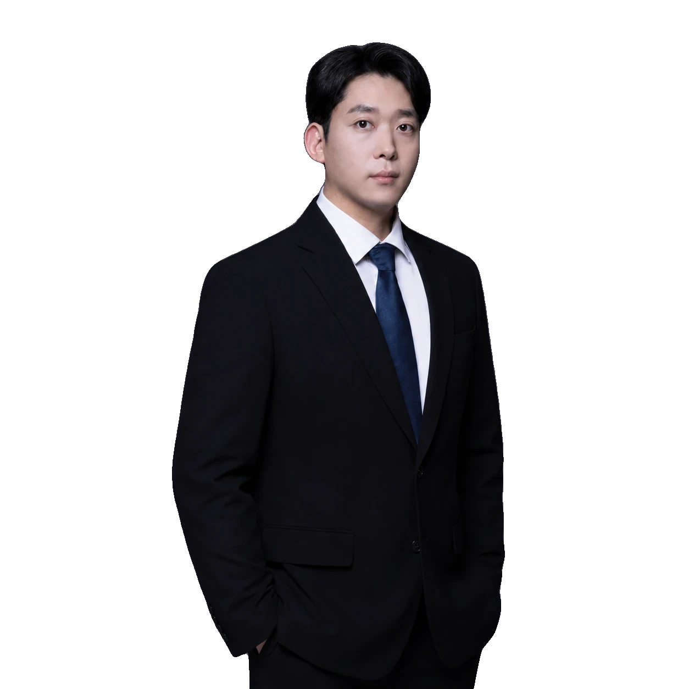
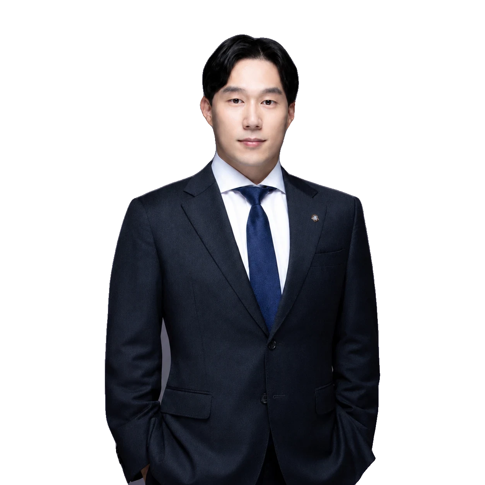

CIVIL · REAL ESTATE · 손해배상
화재 · 산재 · 국가배상손해배상 청구
옆 공장 과실로 난 화재에서 약 12억 원, 경고 표지판 없는 도로 추락 사고에서 지자체를 상대로 약 2억 1천만원, 하도급 노동자 사망 산재에서 약 1억2천 만원의 손해배상 승소 판결을 받았습니다.
문호준 대표변호사대한변호사협회 등록 민사법 전문
 12억 승소
12억 승소 2억1천 승소
2억1천 승소 1억2천 승소
1억2천 승소CIVIL · REAL ESTATE · 재개발·재건축
재개발 · 재건축조합 현장의 경험
재개발·재건축·지역주택조합 분야 전문 대형로펌에서 수십개의 조합 현장을 직접 담당하며, 추진위원회 설립부터 이주 및 인가고시까지 수백개의 법률자문 및 관련 소송을 수행하였습니다.
김준우 대표변호사대한변호사협회 등록 재개발·재건축 전문
 전부 승소
전부 승소 이의 방어
이의 방어CIVIL · REAL ESTATE · 제조물·의료
제조물 결함 · 의료사고책임을 입증합니다
전기매트·전동스쿠터 화재에서 제조물 책임을 입증해 각각 약 1억 1천만원, 약 6천 5백만원을 받아냈고, 재활 중 넘어진 사고에서 병원을 상대로 약 6천만원 승소 판결을 받았습니다.
문호준 대표변호사대한변호사협회 등록 민사법 전문
 1억1천 승소
1억1천 승소 6,500만 승소
6,500만 승소 6천만 승소
6천만 승소
CIVIL · REAL ESTATE · 소송 방어
청구를 당했다면방어도 소송입니다
허위신고 및 명예훼손을 이유로 손해배상을 청구당한 사건에서 피고를 대리해 전부 승소 판결을 받았습니다.
차현준 대표변호사대한변호사협회 인증 형사법 전문변호사
 피고 전부 승소
피고 전부 승소


 3천만 승소
3천만 승소 전부 인용
전부 인용 증거 보전
증거 보전 일부 승소
일부 승소